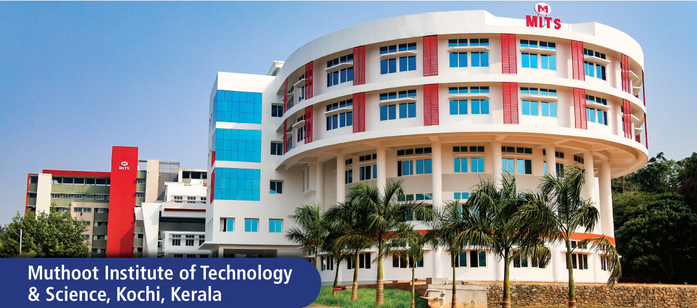

MUTHOOT INSTITUTE OF TECHNOLOGY AND SCIENCE

MITS is a self-financing technical institution offering undergraduate engineering programs and is located in the industrial suburb of Kochi, India. It is one of the best engineering colleges in Kerala, accredited by the National Board of Accreditation (NBA) and affiliated with the APJ Abdul Kalam Technological University.
This is a premier engineering college in Kochi that provides undergraduate and postgraduate engineering programs. Various specializations are available in the institute’s B.Tech and M.Tech programs.